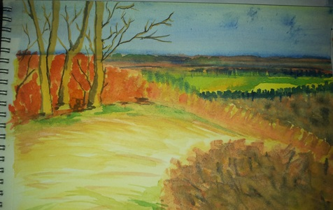
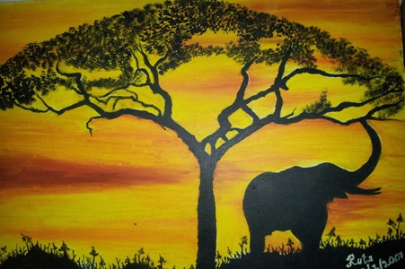
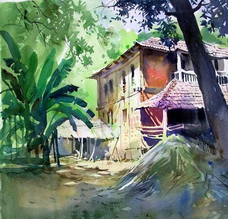

Watercolor Paintings
From the late 18th century through the 19th century, the market for printed books and domestic art contributed substantially to the growth of the medium. Watercolors were the used as the basic document from which collectible landscape or tourist engravings were developed, and handpainted watercolor originals or copies of famous paintings contributed to many upper class art portfolios.
Oil Paintings
Although oil paint was first used for the Buddhist paintings by Indian and Chinese painters in western Afghanistan sometime between the fifth and tenth centuries, it did not gain popularity until the 15th century.
The transition began with Early Netherlandish painting in Northern Europe and by the height of the Renaissance oil painting techniques had almost completely replaced tempera paints in the majority of Europe.
Acryllic Paintings
Compared to oil and watercolor, acrylic painting is a relatively modern medium for artistic expression. The history of oil painting extends far back in Western history and watercolor has its roots in the Renaissance, whereas acrylic has only just emerged over the course of the past century. As with watercolor and oil, acrylic offers its own distinct set of characteristics and attributes, most notably its versatility, immediacy, and durability. Many artists are attracted to acrylic painting for its dominant bright colors and sharp brushstrokes.
